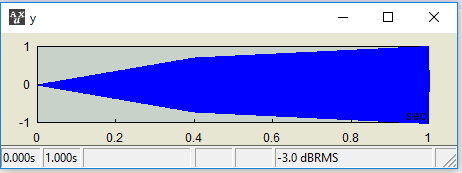
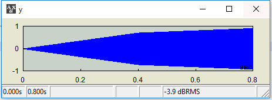
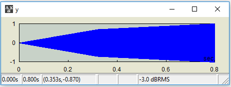
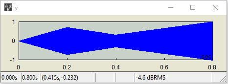

A data type TSEQ is an array container consisting of a time point and the data corresponding to the time point.
A TSEQ object has the following form:
[x][y] |
where x is the time point vector in milliseconds and y is the data vector. Here x and y must have the same length. In this form, at each time point the data is a scalar. In general, the data do not need to be a scalar; but can be in any form. To define such time sequence,
[t1 | y1; t2 | y2; ...] |
where tn and yn are time marker and the corresponding value array in any length. (note: this is not implemented yet as of AUXLAB 1.47).
Sometimes it is very useful to have time values relative to another audio signal. In such cases, define a relative time sequence as follows:
[x;][y] |
The amplitude of a tone is scaled with a TSEQ, 0 at t=0, .7 at t=250ms, .3 at t=500ms, and 1 at t=1000ms. The multiplication operation with a TSEQ involves linear interpolation between specified time points.
AUX> x = tone(500,1000); |
AUX> ts = [0 250 500 1000][0 .7 .3 1]; |
AUX> y = ts * x; |

The same TSEQ as above but the audio signal with a differation duration. Is this what you want?
AUX> x = tone(500,800); |
AUX> ts = [0 250 500 1000][0 .7 .3 1]; |
AUX> y = ts * x; |

If you wanted to scale the audio with the same relative time course as Example 1, then go with a relative TSEQ.
AUX> x = tone(500,800); |
AUX> ts = [0 .25 .5 1;][0 .7 .3 1]; |
AUX> y = ts * x; |

To adjust the amplitude of the audio signal with a desired time course in terms of dB, use the @ operator:
AUX> x = tone(500,800); |
AUX> ts = [0 .25 .5 1;][-100 -3 -10 0]; |
AUX> y = x @ ts; |

Created with the Personal Edition of HelpNDoc: Easy CHM and documentation editor